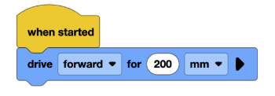
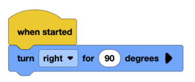

Lesson 4: Simple Movements
Lesson Objectives
- Learn how to make the robot turn and move forward.
Lesson Overview
The purpose of this lesson is to teach students how to make their robot drive forward and backward, as well as turn. For the activity, students can use their pseudocode from the previous lesson to make their robot move in a pentagon shape.
Materials Needed
- Notebooks for each student
- Computers (ideally 1 per group)
- Basebots
- VEXcode IQ website
Lesson Procedure
Getting Started
- Begin with the computers and have students set up a drivebase like they did in lesson 2. Make sure that the ports selected are accurate.
- Have students drag in the block below, like earlier:
- Download and run the program.
- Then, have students set up their program like this:
- Have them download and run the program.
- They should now understand how to move forward and backward as well as turning right and left.


Monitoring Progress
- Using the pseudocode from the previous lesson, have your robot drive in a pentagon shape using the gyro sensor in your brain to make turning more accurate.
Wrapping Up
- End with a group discussion on what they learned, which steps were easy and challenging, and if there is anything that didn’t go smoothly.
Assessment
- Students understand how to make their robot do simple movements such as turns and moving forward/backward.
- Students understand how pseudocode is useful in simplifying things when programming.
Preparation for next class
Next class will introduce a new concept of wait and timing and a couple new blocks. The future lessons will basically all use the website and the bots.